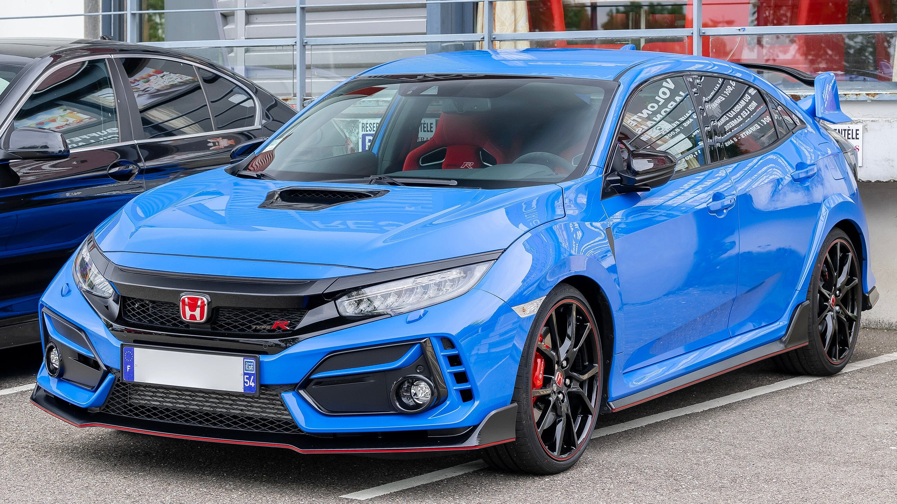

Honda es conocida por fabricar automóviles confiables y eficientes. Algunos de sus modelos más populares incluyen:
Honda Civic (1972-presente): Compacto y económico.
El Honda Civic es un automóvil de turismo del segmento C fabricado por Honda desde 1972.
Ha pasado por múltiples generaciones y modificaciones, creciendo en tamaño y mejorando en tecnología y rendimiento

Honda Accord (1976-presente): Sedán mediano con alta calidad.
El Honda Accord es un sedán del segmento D producido por Honda desde 1976. Se ha
convertido en uno de los modelos más reconocidos de la marca, destacando por su comodidad, tecnología y rendimiento.
Honda CR-V (1995-presente): SUV popular por su espacio y rendimiento.
l Honda CR-V es un SUV crossover compacto que ha sido un éxito mundial desde su lanzamiento en 1995. Para 2025,
Honda ofrece el CR-V con un diseño más robusto, mayor distancia entre ejes y versiones híbridas con 204 caballos de fuerza.
Honda Pilot (2002-presente): SUV más grande, ideal para familias.
El Honda Pilot es un SUV de tamaño completo diseñado para ofrecer comodidad y capacidad todoterreno.
Para 2025, Honda ha mejorado su diseño y rendimiento, ofreciendo versiones con tracción integral y tecnología avanzada.